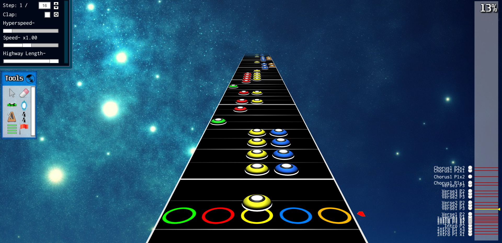

This page is about answering any and all questions about the website, it's content, or anything related to it.
Clone Hero is a community made game, made in the Unity engine. It's designed to replicate the game Guitar Hero.
Guitar Hero is a series of music rhythm game video games first released in 2005, in which players use a guitar-shaped game controller to simulate playing primarily lead, bass guitar, and rhythm guitar across numerous songs. Players match notes that scroll on-screen to colored fret buttons on the controller, strumming the controller in time to the music in order to score points.
To download a custom song from my website, go to the Custom Charts page and click look for the "DOWNLOADS" section for the song you want. Then click either the Google Drive or Mediafire link. It will then download a .rar file (to open .rar files you will need WinRAR or a similar program). Open the .rar file and drag the folder into your Clone Hero "songs" folder (Clone Hero/songs/...). You will need to launch Clone Hero, go the settings menu and scan your custom content. The song should then appear to play in the game.
Yes! The websites I know about are:
Charting simply means to place notes on the path (highway) that match with the song the user will be playing. So a "custom chart" just means that a community user made that song, rather than an official source like the Guitar Hero or Rock Band game files. Anyone can make a custom chart of anything! I've seen people make charts that follow the cadence of speech from a Simpsons meme.
This is an example of what a song being charted looks like (This is from my upcoming chart "Department of Eagles - Phantom Other").
The program I use is called "Moonscraper". I've heard of others, but I think think Moonscraper is the best. If you want to see the list of other charting programs, click the link here.